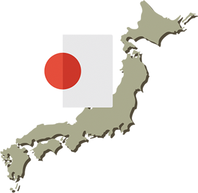
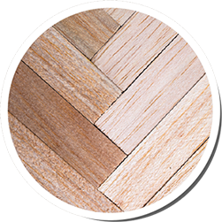
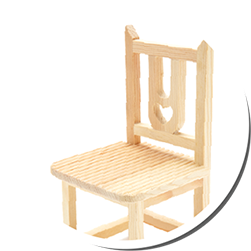
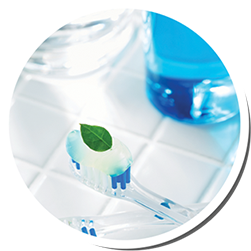
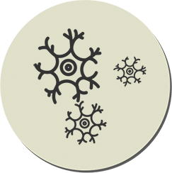

좋은 공기를 내뿜는
편백
扁柏
중국 이름을 가져온 것으로, 비늘 모양의 잎이
가지에 밀착된 모양을 보고 지어진 이름.
편백
높이 30~35m, 둘레 2m까지 자라는
늘 푸른 잎을 가진 큰키나무이다.

고향은 일본
목재생산을 위해 우리나라에 심어졌다.
편백의 쓰임새

건축재/선박재
가공성과 보존성이 뛰어나고, 향기와 광택이 있어
건축재, 선박재, 조각재로 쓰인다.

실내용 가구
아토피, 알레르기성 비염에 효과가 있어
욕조, 침대, 책상 등 실내용 가구에 쓰인다.

치약, 비누, 방향제
잎/열매에서 추출한 향기는 치약,
비누, 방향제로 개발되어 쓰이고 있다.
편백이 뿜는 향기
피톤치드
사람마다 다른 체취를 가지듯 식물도 다른 향기를 가지고 있다.
피톤치드는 식물이 가진 향기의 일종이다.
사람의 마음을 안정시키고 면역력을 높인다.
공기를 정화하고 나쁜 냄새를 제거한다.

벌레와 병원균을 죽이고 방충효과가 있다.